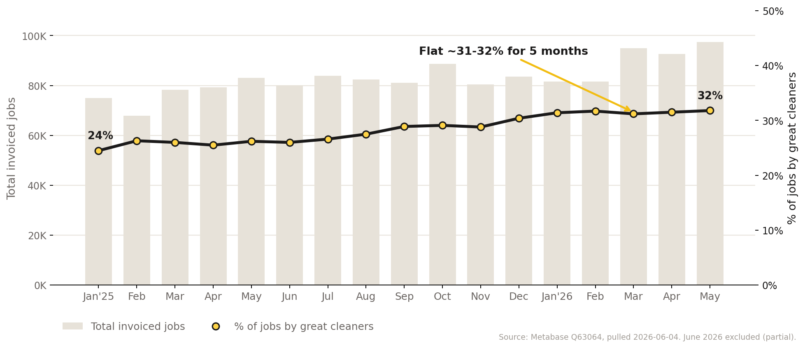

We have solved cleaner supply. Quality mix is the new constraint, and it has stalled. Here is the problem, the metric, why it matters, and how we move it.
~15,000 active CPs. We built the supply to serve the jobs we book. That first-order problem is behind us.
Only ~3,700 are great. Customers retain when a great cleaner does the job, so the quality mix now caps growth.
The opportunity is not more bodies. It is shifting the mix toward the cleaners who actually carry the marketplace.

Share climbed ~24% to ~31% through 2025, then flat at ~31-32% for five months even as total jobs hit record highs (~97K in May). Great-cleaner supply is growing only in lockstep with the platform, not gaining share.
Only ~8% of all sign-ups (closer to ~15% for our best cohorts) ever invoice a first job. Marketing scaled Spanish sign-ups from ~800 to ~1,200 per week, but the number reaching first invoice stayed flat. We are pouring more in the top and the funnel is not converting it.
Leading hypothesis: job visibility and tiering. New cleaners enter at tier 6, see nothing claimable, and drop off. Validating tiering vs. density gates the whole activation thesis.
Of cleaners who open the dashboard at least once, nearly half are never shown an available job to claim.
Spanish cleaners who never saw a job still checked the dashboard 3+ times in their first three days. The intent is there.
95% load the dashboard at least once, but only 65% check more than twice. The window to intervene is short.
Spanish-speaking cleaners become great at the highest rate, yet they suffer the same attrition as everyone else.
From a ~1 month-old pull, to confirm with a newer one. The pattern: cleaners want jobs and cannot see them.
Primary metric: % of total monthly invoiced jobs done by great cleaners. Job-level, so a CP must be great at the time of the job. Confirming "great" takes 2-3 months, which is too slow to steer on alone.
"Great" (Ops): 11+ invoiced jobs, 4.8+ rating with 5+ reviews, no-show under 1%, low refund, cancel, and not-want-again rates.
Track, by start cohort, the % of CPs still great in each later month, exactly like a user-acquisition retention curve. The goal is to lift that curve: more of each cohort qualifying as great and holding the bar longer.
Customer retention is materially higher when a great cleaner does the work, which directly drives LTV and ROI.
Spanish-speaking CPs are worth ~150% more than English-speaking. A clear case to value and serve cohorts differently.
~85-92% of fully signed-up cleaners never invoice. The acquisition + activation fix is roughly 2-4x the retention opportunity.
A few points of mix improvement compounds across ~95K jobs every month.
Know the real value of each cohort we acquire, then point spend at the cohorts that actually become great.
Once we know a cohort is valuable, serve them jobs better so more reach a first invoice. Fixing activation lifts retention as a byproduct.
Even imperfect versions of both are high leverage. Activation is the better first lever, even on retention's own terms.
Source the cleaners
marketingSource cohorts that skew great
marketingMake a job claimable
pd / opsLand the first job
pd / opsOver 2-3 months
pd / opsMarketing owns the top (Sign-up, See a job). PD/Ops owns the middle (Claim, Invoice, Make great), where ~85% of the funnel leaks, so it is the highest-value place to fix.
Is it tier constraints, not geography, that stop new cleaners from seeing jobs?
A shared, stage-by-stage view from sign-up to actual great CP.
How often new-cleaner claims get swapped out, and how often customers cancel on them.
When new cleaners stop checking after sign-up, so an intervention lands in time.
The baseline, the trigger, and a proxy we can read in weeks, not months.
Which sign-up traits correlate, and how first-job logic should change once we can score cohorts.
Lock "great" plus an early proxy, build the shared funnel baseline, validate tiering vs. density.
Tier-10 Spanish lead test in one geo, real-time "job available" push, proactive settings nudges.
Scale Spanish sign-ups, test Spanish vs. English messaging, explore new attributes and channels.
Known so far: Spanish, a 150+ word bio, vetted experience, referrals. Regression to find the rest, and quantify a great CP's value to guide spend.
Re-engage the ~3,000 lapsed; a post-first-job referral program, run with a control.
Score cohorts at acquisition and set first-job logic and tier automatically.
Deprioritized to keep focus: retention for active greats, abandoned-cart, and paid assessors.
Complete investigations, collect and dashboard all relevant data, further brainstorm tests and initiatives.
Execute changes to the Spanish CP Meta program to drive increased volume, conduct 2+ tests to improve signup → invoicing by "likely great," and build out the initiative backlog and test plans.
Execute and iterate to drive increase.